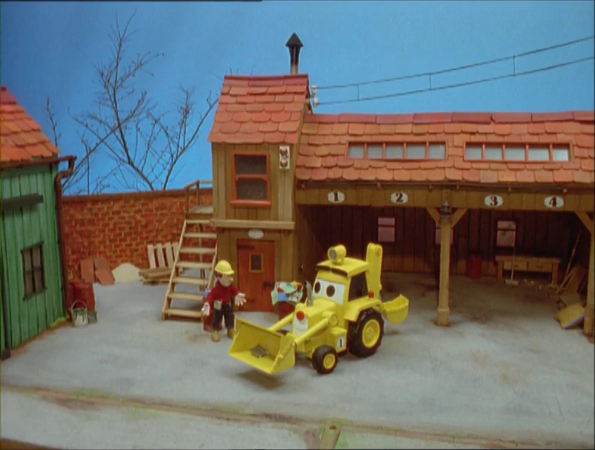

Bob 1997
Pilot Versie
Keith Chapman maakte de eerste pilot versie van Bob de bouwer. Deze is nooit op tv laten zien. Je ziet ook dat deze bob het meest afwijkt van de “echte Bob”. Hij heeft hier nog geen tuinpakje aan bijvoorbeeld. Ze hebben een clipje gemaakt van 2 min en 10 seconden, om het idee te pitchen en gebruikte stop-frame-animatie. Scoop heette in deze episode nog “Digger”.
